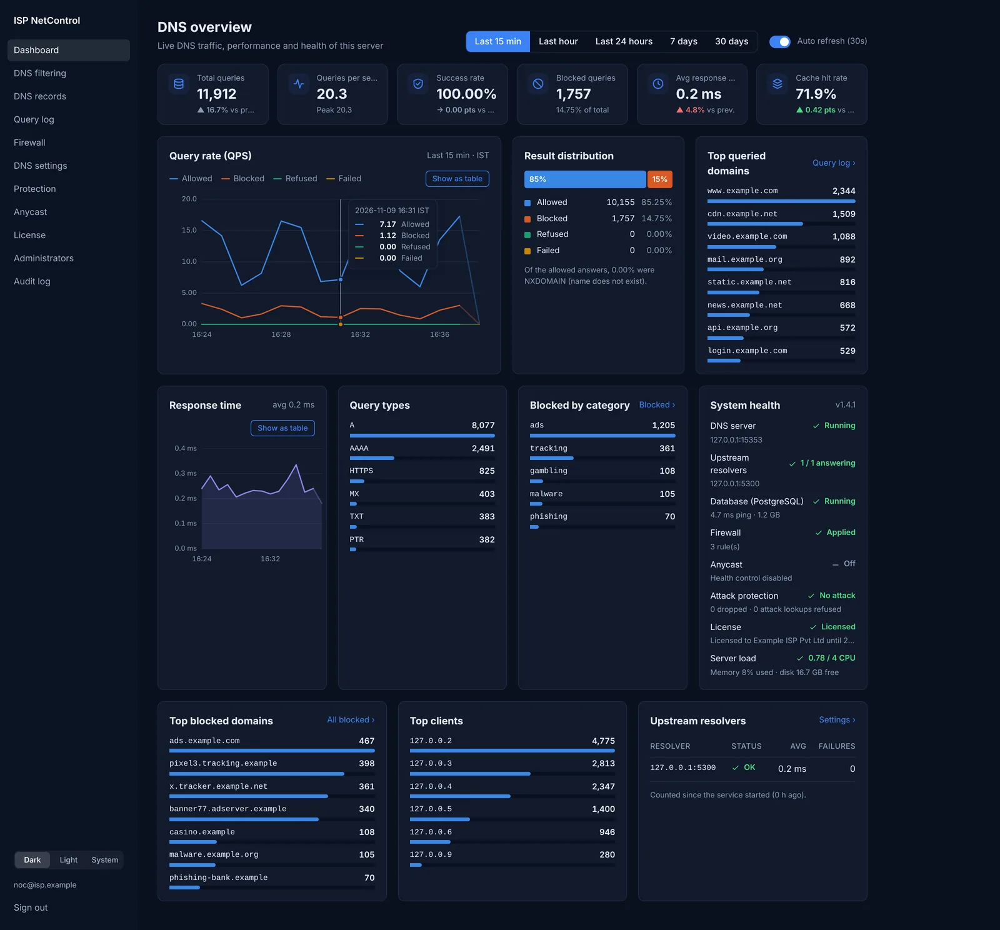
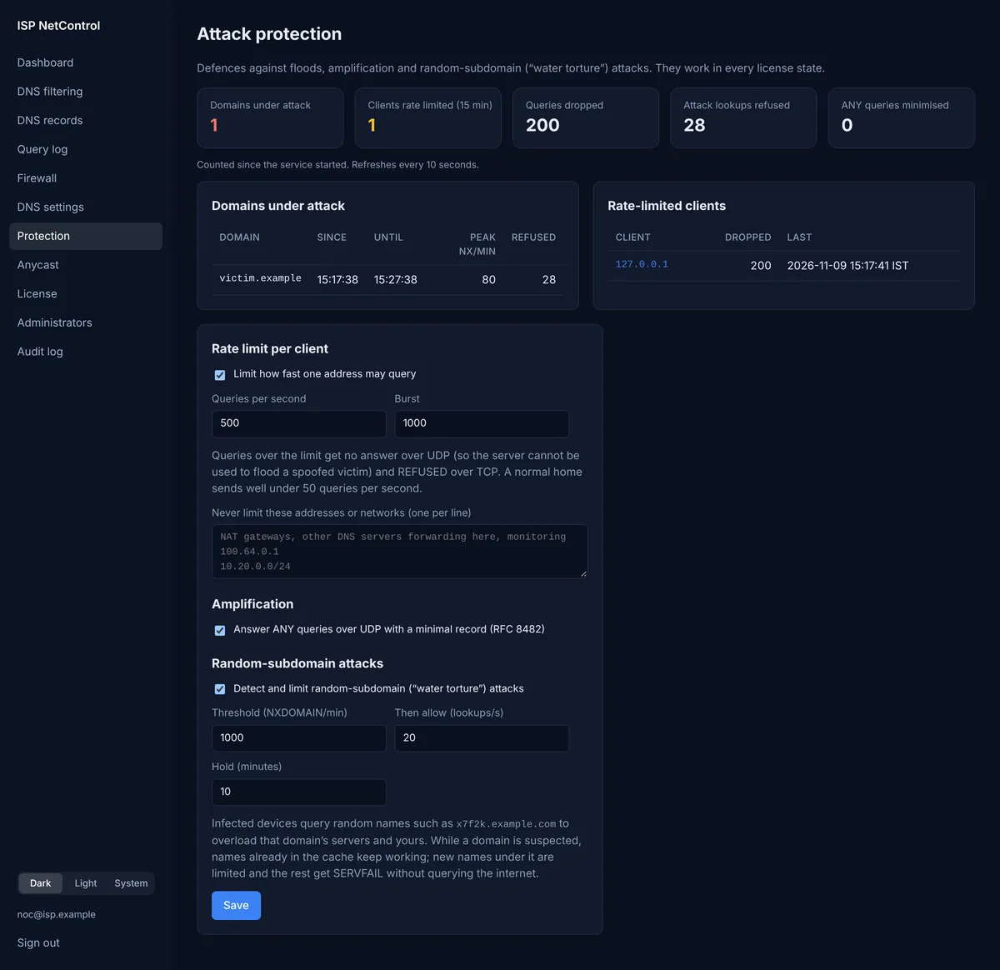
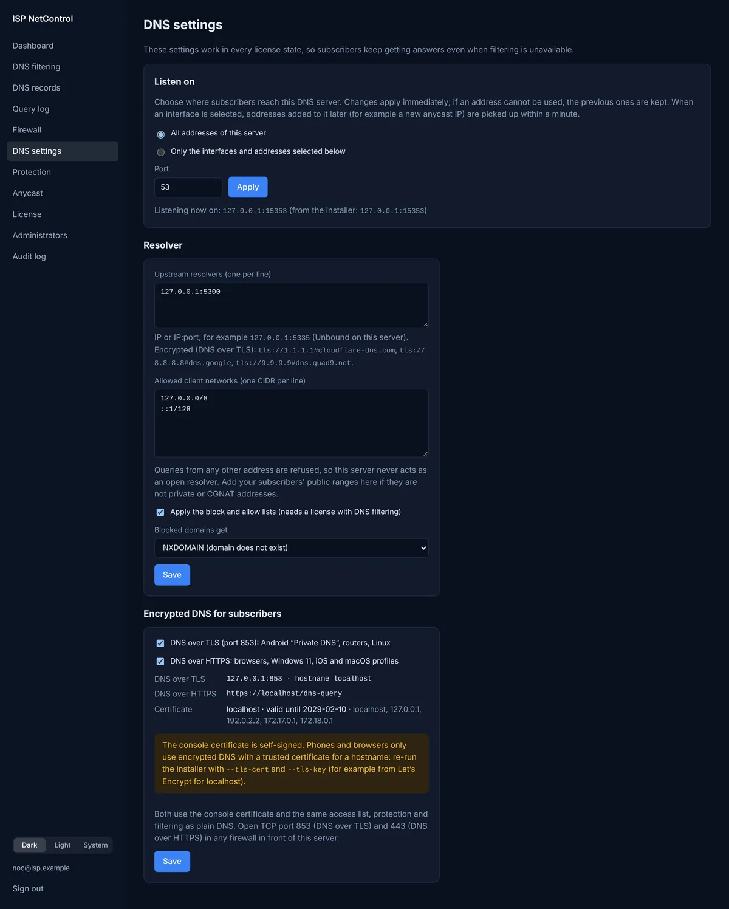
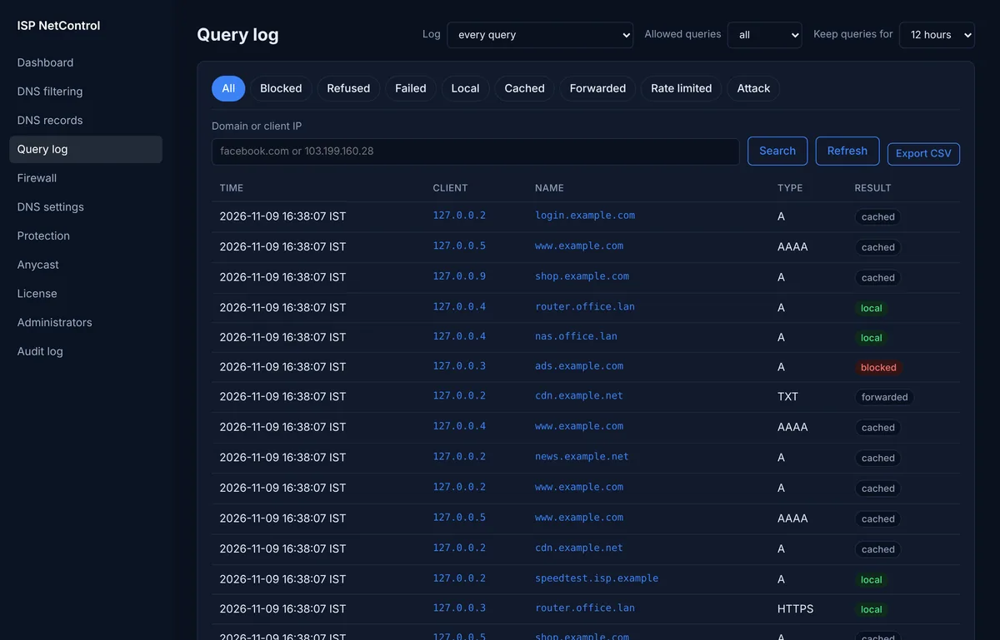

The DNS server built for ISPs
Fast, filtering DNS for your subscribers, with DNSSEC, attack protection, DNS over TLS and HTTPS, anycast and a live NOC dashboard. Install it on Ubuntu 24.04 with one command.
$ curl -fsSL https://dns.netfixpro.in/install.sh | sudo bash
Asks for your administrator e-mail, then installs Docker, PostgreSQL, Unbound and the console. Re-run it any time to upgrade; your settings and data are kept.
See your whole network's DNS at a glance
A NOC dashboard with live query rate, response time, blocked categories, top domains and clients, upstream and system health.




Everything an ISP resolver needs
One server, one console. Every feature below is in the box.
Fast under load
Sharded cache, one socket per CPU core and merged duplicate lookups keep answers in microseconds during peak hours.
Own recursive resolver
Built-in Unbound resolves from the root servers with DNSSEC validation, prefetching and serve-stale. No dependency on Google or Cloudflare.
Attack protection
Per-client rate limiting, minimal ANY answers against amplification, and automatic detection of random-subdomain (water torture) attacks.
Encrypted DNS
DNS over TLS for Android Private DNS and routers, DNS over HTTPS for browsers and Windows, and encrypted upstream resolvers.
Filtering
Block and allow lists with categories, daily list subscriptions from a URL, NXDOMAIN or sinkhole answers, and import or export as hosts files or CSV.
Anycast ready
Health checks withdraw this server's routes (iBGP, OSPF, IS-IS via FRR) when DNS fails and announce them again on recovery.
Local DNS records
A, AAAA, CNAME, TXT, MX and PTR records with wildcards, for internal hosts, overrides and reverse lookups.
Query log and statistics
Search every query by domain or client, export CSV, keep logs from 1 hour to 90 days, and sample on very busy servers.
Secure console
Mandatory two-factor sign-in, several administrators, an audit log of every change, and an nftables firewall manager.
Up and running in minutes
A fresh Ubuntu 24.04 server. We recommend at least 2 CPU cores, 4 GB RAM and 20 GB of disk, and more cores for large networks.
Run the installer
Paste the command on your server. Enter the administrator e-mail when asked. The installer prints the console address and an initial password.
Sign in
Open the console in your browser, set your password and scan the two-factor QR code with any authenticator app.
Go live
A 30-day trial with every feature starts at once. Add your subscriber networks, activate your license and point your customers at the server.
Options
Add options after bash -s --. For example, your own hostname and certificate (needed for encrypted DNS on phones):
curl -fsSL https://dns.netfixpro.in/install.sh | sudo bash -s -- \ --domain dns.your-isp.example \ --tls-cert /etc/letsencrypt/live/dns.your-isp.example/fullchain.pem \ --tls-key /etc/letsencrypt/live/dns.your-isp.example/privkey.pem
Serve DNS on specific addresses only:
curl -fsSL https://dns.netfixpro.in/install.sh | sudo bash -s -- --dns-listen 203.0.113.10:53
Without the Unbound resolver: put NO_UNBOUND=1 after sudo.
What the installer does
- Installs Docker and downloads the source from GitHub
- Frees port 53 from systemd-resolved (your server still resolves names)
- Sets up Unbound on 127.0.0.1:5335, sized for your CPU and memory
- Starts PostgreSQL 16, the DNS server and the HTTPS console
- Schedules daily database backups
- Never touches your existing firewall rules
Upgrading is the same command. Want to read it first? View install.sh.
Give your subscribers faster, safer DNS
Try every feature free for 30 days. No card, no sign-up.
$ curl -fsSL https://dns.netfixpro.in/install.sh | sudo bash